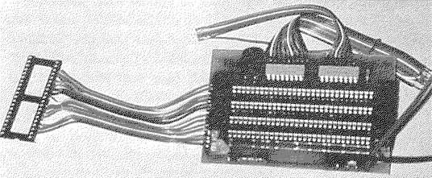
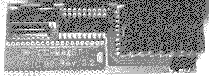
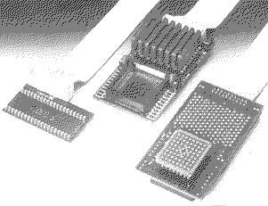

Previous
Next
TOC
Die steckbare 4 Megabyte Speichererweiterung auf der Basis von vier
30 Pin SIMM Modulen der Firma Lion Hard Systems

Die steckbare 2/4 Megabyte Speichererweiterung der Firma Catch Com-
puter aus Aachen (gibt es nicht mehr)

Die steckbare 4 Megabyte Speichererweiterung der Firma CP
Die Karte wird direkt in den MCU Sockel gesteckt und die MCU kommt
in den freien Sockel der Speichererweiterung

weiterblättern
Kapitel Die Speichererweiterungskarten, Seite 4